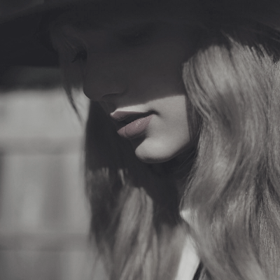

Lanzado el 22 de octubre de 2012, Red marcó un hito en la carrera de Taylor Swift, ya que representó su transición del country hacia un sonido más pop y experimental. El álbum incluye una mezcla de géneros como el pop, country, rock y electrónica, lo que permitió a Swift ampliar su audiencia. Con temas como "We Are Never Ever Getting Back Together" y "I Knew You Were Trouble", Red se destacó por sus letras profundas y emotivas que exploran el amor, el desamor y la madurez personal, consolidando a Swift como una compositora versátil y con una gran capacidad para conectar con sus fans.

Loving him is like driving a new Maserati down a dead-end street. - State of GraceUno de los aspectos más curiosos de Red es que, a pesar de ser conocido por su vibrante mezcla de géneros, fue grabado en una época donde la cantante aún estaba descubriendo su identidad musical. El proceso de grabación fue intensivo, y Swift trabajó con diversos productores, entre ellos Max Martin, quien impulsó la transformación hacia un sonido más comercial y accesible. La canción "All Too Well", ampliamente considerada como uno de sus mayores logros artísticos, se ha ganado un lugar especial en el corazón de sus seguidores por su emotiva narrativa y su capacidad para capturar las complejidades de una relación rota.En 2021, Taylor Swift lanzó Red (Taylor's Version), como parte de su esfuerzo por recuperar los derechos de sus masters originales. Esta nueva versión incluye 30 canciones, ampliando el álbum original con temas inéditos y regrabaciones, lo que permitió a los fans redescubrir la obra con una nueva perspectiva. Este acto de empoderamiento personal se convirtió en un símbolo de la lucha de los artistas por el control de su música, y reafirmó la relevancia de Red como una pieza clave en la evolución de Taylor Swift como artista y como defensora de la propiedad artística.